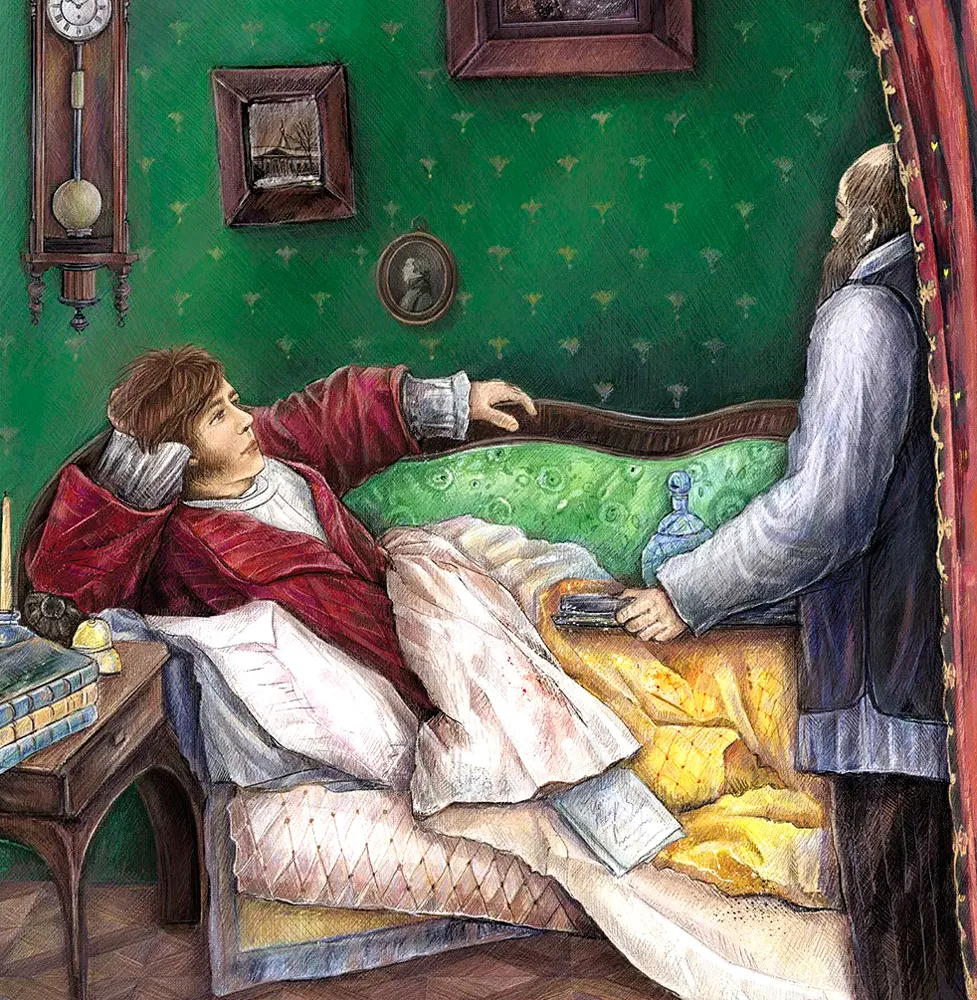
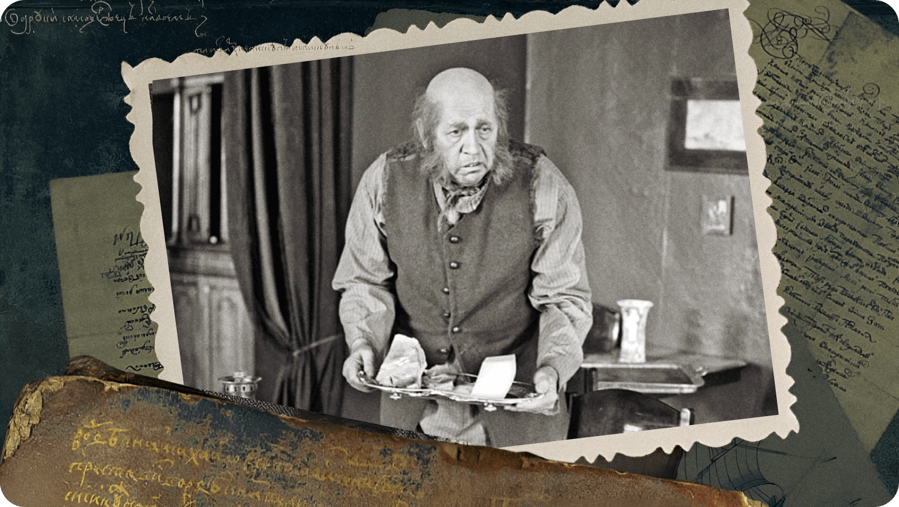
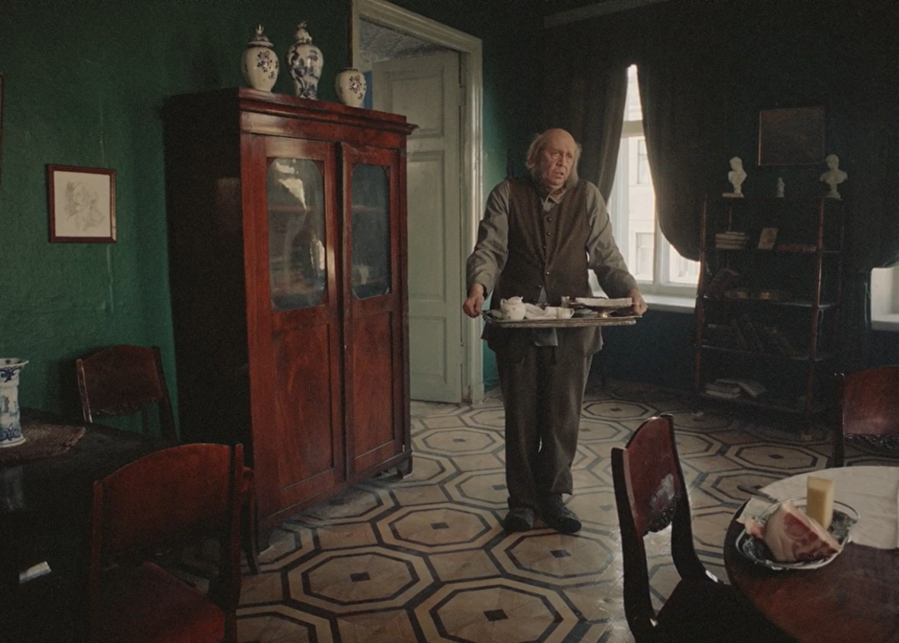
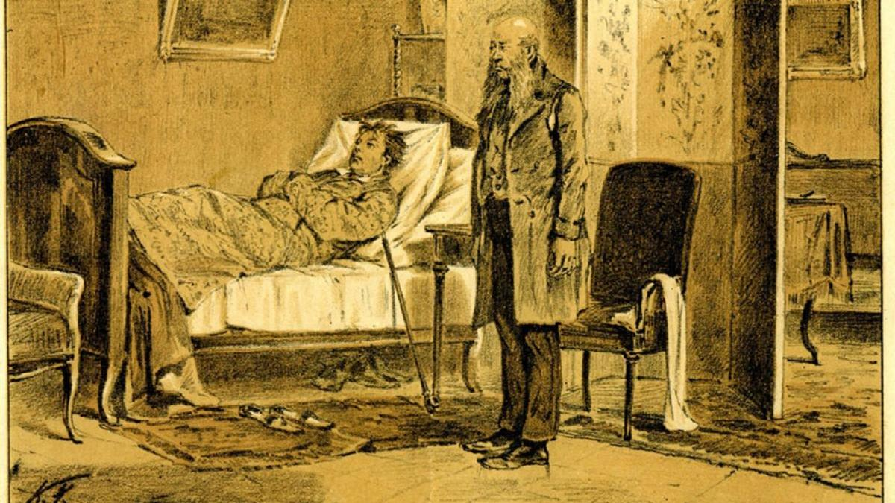
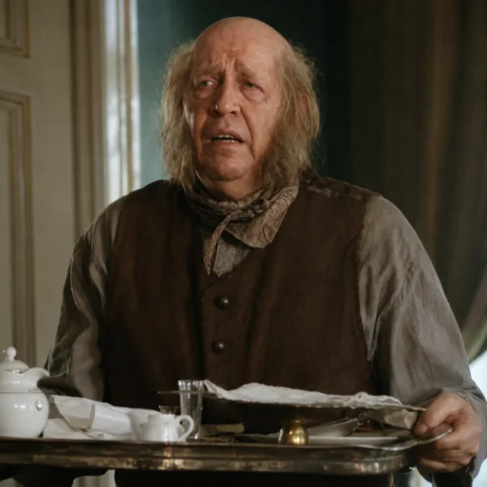
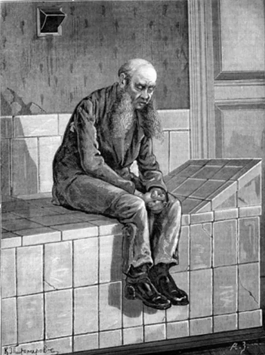

Захар — не просто слуга, а центральный второстепенный персонаж, чья судьба неразрывно связана с судьбой главного героя.

Уже с первых строк Гончаров рисует Захара как человека старого уклада, плоть от плоти крепостной России.

Поведение Захара — это отдельный художественный приём: через него Гончаров показывает, как «обломовщина» пропитала даже слуг.

Во второй части романа раскрывается главное в Захаре — его отношение к барину. Это не просто служба, а глубокая, почти родственная связь.

Финал романа — трагический и для Захара. Со смертью барина рушится весь его мир, и он оказывается никому не нужен.

Образ Захара — это не просто «слуга при барине». Это ключ к пониманию всего романа и явления «обломовщины».

Спасибо за внимание!